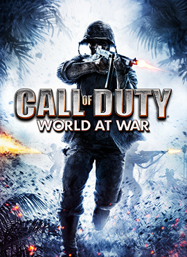

|  | |
| Tiempo de juego | No Jugado |
| Última actividad | Nunca |
| Añadido | 11/6/2024 15:27:56 |
| Modificado | 11/17/2024 14:28:56 |
| Estado de finalización | No Jugado |
| Librería | Playnite |
| Fuente | 1 TB 1 |
| Plataforma | PC (Windows) |
| Fecha de lanzamiento | 11/11/2008 |
| Puntuación de la Comunidad | |
| Puntuación de la Crítica | 84 |
| Puntuación de usuario | |
| Género | First-person shooter |
| Desarrollador | Treyarch |
| Editor | Activision |
| Característica | Multiplayer Single-player |
| Enlaces | Wikipedia Official website MobyGames IMDb |
| Tag | [Game Engine] IW 3.0 [People] artist: Brian Anderson [People] artist: Colin Whitney [People] composer: Sean Murray [People] designer: Jeremy Luyties [People] designer: Jesse Synder [People] director: Corky Lehmkuhl [People] producer: Pat Dwyer [People] programmer: David King [People] writer: Craig Houston |
Call of Duty: World at War is a 2008 first-person shooter game developed by Treyarch and published by Activision. It is the fifth main installment of the Call of Duty series and is the fourth entry in the series to be set during World War II. The game was announced by Activision in June 2008 and was released in November 2008, for PlayStation 3, Windows, Xbox 360, and Wii. Other games under the World at War title were published for the Nintendo DS and PlayStation 2, featuring different storylines and missions.
World at War's campaign focuses on the Pacific and Eastern Front theaters of World War II; its story is told primarily from the perspectives of US Marine Raider Private C. Miller and Soviet Red Army Private Dimitri Petrenko. The game's multiplayer component retains several features from Call of Duty 4: Modern Warfare (2007), such as the leveling, perk, and "killstreak" systems. Additionally, World at War marked the debut of the cooperative Zombies mode, which would go on to become a mainstay in Treyarch's subsequent Call of Duty games.
Development for World at War took two years and began after the release of Treyarch's previous entry in the series, Call of Duty 3, which was also set during World War II. The game is based on an enhanced version of Infinity Ward's IW engine, with increased development on audio and visual effects. Treyarch utilized the engine to make more parts of certain environments destructible and introduce limb dismemberment and realistic burns to character models.
Upon release, World at War received positive reviews from critics, with praise directed at its intensity and violent nature, though it received criticism for its lack of innovation. It became one of the best-selling titles of 2008, selling 3 million copies in the United States within the first two months of its release. It also marked the beginning of the Black Ops sub-series, as characters from World at War were carried over into its sequel, Call of Duty: Black Ops (2010).
World at War features more mature themes than previous Call of Duty installments and is open-ended, giving the player multiple ways to complete objectives, but otherwise generally plays like previous iterations of the franchise. Players fight alongside AI-controlled teammates. They help during the game's missions by providing cover fire, shooting down enemies, and clearing rooms for entry. When playing the Wii version of the game, the Wii Remote and Nunchuk is used to aim at enemies with motion controls.
The game features a variety of different weapons and technology from World War II. The player gains access to these over the course of the game, but may only carry up to two weapons in addition to hand grenades. Weapons and ammo from fallen foes or friendlies can be picked up to replace weapons in a player's arsenal. Players can also find weapons with additional attachments, including guns equipped with rifle grenades, telescopic sights, and bayonets.
A character can be positioned in one of three stances – standing, crouching, or prone – with each affecting the character's rate of movement, accuracy, and stealth. Using cover helps the player avoid enemy fire or recover health after taking significant damage, as there are no armor or health powerups. When the character has taken damage, the edges of the screen glow red and the character's heartbeat increases. If the character stays out of fire, the character can recover. When the character is within the blast radius of a live grenade, a marker indicates the direction of the grenade, helping the player in deciding whether to flee or throw it back at the enemy.
The single-player campaign includes thirteen hidden "death cards", denoted by playing cards attached to makeshift war graves. There is one in each level (barring those that take place in vehicles); collecting them unlocks cheats for Co-op mode, such as reduced enemy endurance and "paintball mode".
World at War's multiplayer experience resembles the one established in Call of Duty 4: Modern Warfare. All versions of the game use a similar perk and ranking system and feature six multiplayer modes, including Team Deathmatch and capture the flag. There are three "killstreak rewards" that can be used to turn the tide of battle: a recon plane, showing opposing players on the mini-map; an artillery strike upon an area; and attack dogs, which spawn and attack opposing players. These are gained with 3, 5, and 7 kills, respectively. They are available in all game modes, apart from team survival, and cannot be edited.
The game also features a cooperative gameplay mode with up to two players via split-screen on consoles, or four players online, for the first time in the franchise. The Wii version of the game does not include online co-op, but two players can play through a "squadmate co-op" mode which allows both players to experience the game through the same screen and point of view.
The Xbox 360, PlayStation 3, and Windows versions of World at War feature the minigame Nazi Zombies. This is the first appearance of the "Zombies" mode in any Call of Duty game; the mode would eventually become a mainstay for any Call of Duty game developed by Treyarch. On completion of the final campaign mission, the first Zombies map, "Nacht der Untoten", will launch automatically.
In this mode, one to four players fight an unlimited number of waves of Nazi zombies (with exception for the map "Shi No Numa", which has undead members of the IJA), beginning with an M1911 pistol. Players earn points for killing zombies or repairing boarded-up windows, which are used to expand areas of the map to access more useful weapons. Zombies routinely break the windows to enter and attack the players; if a player is attacked enough times, they fall and will need to be "revived" by another player in a certain time, or wait until the next round occurs to play again. If all players are damaged enough to fall, the game is over. As the game's DLC cycle continued, three additional Zombies maps were released, which added several new features to the mode. These features included "Perk-a-Colas", which are soda themed player upgrades, traps based on electro-shock therapy, and the "Pack-a-Punch" machine, which is used to upgrade weapons.
During the single-player campaign, the player controls three characters from a first-person perspective. The player first assumes the role of Private C. Miller of the United States Marine Corps' 1st Marine Division, fighting with Corporal, later Sergeant, Roebuck (voiced by Kiefer Sutherland), and his men from the Marine Raiders, during the Pacific War. Other notable non-playable characters of the Marine Raiders unit include Sergeant Tom Sullivan (voiced by Chris Fries) and Private Polonsky (voiced by Aaron Stanford). The second playable character is Private Dimitri Petrenko of the Red Army, who fights on the Eastern Front with Sergeant Viktor Reznov (voiced by Gary Oldman). They are joined by a third character, Private Chernov, Reznov's subordinate, who serves as a voice of reason throughout the campaign and regularly voices shock and disapproval at the brutal slaughter he witnesses. The third playable character in the campaign is Petty Officer Locke, a weapons operator on a PBY Catalina, who is only playable in the mission "Black Cats".
World at War was announced on June 23, 2008, by Activision, who confirmed that the game was to be released in fall 2008, and that the series would revert to its customary World War II setting. The game took about two years to make, twice as long as Treyarch's previous entry to the series, Call of Duty 3. The game is powered by an improved version of the Call of Duty 4: Modern Warfare engine, with several improvements made to the physics model. Environments are more destructible and can be set on fire with the flamethrower, whose fire propagates. Dismemberment, as well as realistic skin and clothes burning of the characters were added. Exakt Entertainment assisted in porting the game in this engine to the Wii while Arkane Studios assisted in the creation of levels for the multiplayer mode under the direction of Austin based studio Certain Affinity.
Not long after, Treyarch released the modding tools for Call of Duty: World at War. These tools were the same ones used to create all the other Call of Duty series games, but with slight changes version to version, which can be downloaded online. Kiefer Sutherland and Gary Oldman were cast as voice actors for the game. Sutherland voices the narrator and squad leader of the American campaign, Sergeant Roebuck, while Oldman voices that of the Soviet campaign, Sergeant Reznov. A full-sized replica PBY Catalina was constructed for motion capture use.
The music for Call of Duty: World at War was composed by Sean Murray. He had worked with Brian Tuey, Treyarch's audio director, on True Crime: New York City, the sequel to the first True Crime: Streets of LA. Murray said Tuey "knew I would bring a fresh approach to Call of Duty: World at War". Adam Levenson, the audio director of Activision, was called in to help them. Murray said that he wanted to make the music more fun and intense, but also "a specific musical path that follows the psyche of the gameplay".
The new technology of occlusion, which changes the sound made by nearby object depending on objects blocking its path e.g. walls, has been added to World at War. The game has various levels of "muffled" sound depending on the objects it travels through e.g. a more muffled sound through a thick wall compared to a slightly muffled sound through a thin short wall. For the first time in a Call of Duty game, the player is able to tell the difference between someone walking next to the player and someone walking above or below the player, as well as telling the difference between a shot fired in the distance and a shot fired close by, but behind a solid object.
The other technology of Flux was also developed using field recording systems. The World at War crew traveled to a desert with mountains on both side of the range to test the frequencies of sounds made by World War II weapons. Microphones were placed 60 yards (55 m) behind and 60 yards in front of the gun to test the echoes. This was later replicated and developed in the studio for the game software. It means that players will be able to pinpoint a sniper rifle shot, as it reflects off them, as well as hearing the initial 'pop' of a hand grenade blowing up and then the grenade's loud "whoosh" sound that begins where the grenade blew up, and ends behind the player. The flux system also combines with the occlusion system.
The first trailer for the game premiered on Xbox Live on June 21, 2008, and arrived on PlayStation Network five days later. A beta of the game's online multiplayer mode was released for the Xbox 360 on October 10, 2008. A PC version of the beta was later released on October 28, 2008. Those who pre-ordered the game at GameStop, Game and EB Games in Australia or North America or who are members of the Call of Duty official website were given codes which allowed them to download both beta versions of the game. Coinciding with the release of the game, McFarlane Toys produced four action figures. Three are different varieties of US Marine Corps infantry, and the fourth is a British Special Ops soldier.
A collector's edition of World at War was released on November 11, 2008 in North America and November 14, 2008 in Europe. It includes several bonus items, among them a stainless steel canteen imprinted with the Call of Duty series logo and a metal storage tin. The collector's edition also gives the player access to an unlockable weapon and the opportunity to earn double experience points in the online multiplayer mode, as well as a specially colored clan tag to denote the player's VIP status. This edition of the game is only available for the Microsoft Windows and Xbox 360 platforms.
On February 26, 2009, an update was made available to the Xbox 360 and PlayStation 3 versions, as well as the addition of a new multiplayer map, Makin Day. The update included several bug fixes which removed glitches in several multiplayer maps and player movements, and provided more information in the stats display. The Makin Day map was released for Microsoft Windows on February 6, 2009, in the downloadable patch 1.2. Makin Day has a similar layout as the existing Makin map, but includes subtle changes such as daylight, reflected in the tide being out along the shoreline as well as some reworked areas of the map.
On March 18, 2009, Activision and Treyarch announced that downloadable content (DLC) was under development for World at War, titled Map Pack 1. This first installment of DLC was released on March 19, 2009, for the PlayStation 3 and Xbox 360, while the Windows version received the DLC at a later date. The map pack includes three new multiplayer maps and one new Nazi Zombies map, entitled "Zombie Verrückt" (German: zombie crazy). The map is based on the multiplayer map Asylum, in turn based on the asylum in the campaign mission Ring of Steel. The map includes new weapons and power-ups intended to expand the experience. Players can turn on a power generator that reunites both sides of the map and enables "Perk-a-Cola" machines, which have been featured in every subsequent Treyarch Zombies map (excluding Bus depot). The new multiplayer map called "Nightfire" takes places at night in the streets of a bombed-out area of Berlin. The "Knee Deep" map is in the jungle of Peleliu and contains fortified huts and streams. "Station" is located in a ruined underground train station in Berlin featuring subway cars and hidden passages. Reports stated that Map Pack 1 sold over 1 million copies in the first week of availability, setting an Xbox Live record for the number of downloads in a week.
On April 30, 2009, Activision and Treyarch announced Map Pack 2, which was released on June 11. Map Pack 2 contains an additional four multiplayer maps. "Shi No Numa" (Japanese: "死の沼" 'swamp of death') is a new map on the Nazi Zombies co-op mode, set in a misty swamp-land surrounded by jungle. The map takes place in the Japanese occupied Dutch East Indies and new features include flaming hellhounds, the Wunderwaffe DG-2 weapon and ten new achievements/trophies. The map also introduced four new playable characters who have appeared in many subsequent Treyarch Zombie maps: Tank Dempsey of the U.S.M.C, Nikolai Belinski of the Red Army, Nazi Doctor Edward Richtofen and Takeo Masaki of the Imperial Japanese Army. The multiplayer map "Banzai" is set in a jungle featuring a river bridge, villages, a waterfall and hidden caves. The "Corrosion" map is set in a run-down train yard in Russia, featuring broken pipelines and train cars. The "Sub Pens" map is located in a bombed-out Japanese submarine base with heavy rain.
On July 20, 2009, Activision and Treyarch announced Map Pack 3, which was released on August 6, 2009. This DLC also consists of three new multiplayer maps and a new Nazi Zombies map. The three multiplayer maps are "Battery", which takes place on an abandoned coastal artillery battery Pacific; "Breach", which is set in the overcrowded streets of Berlin, Germany near the Brandenburg Gate; and "Revolution", which is based on an industrialized city in Russia. The new Nazi Zombies map, "Der Riese" which means "The Giant" in English, is based in a factory in Breslau where "Element 115" is being processed and used to build teleporters and other mysterious devices, such as the "Pack-a-Punch Machine", which upgrades guns, such as the Wunderwaffe DG-2. New weapons such as Monkey Bombs were also added. This map also heavily expanded the official backstory to Zombies mode, which is continued into Call of Duty: Black Ops.
All map packs were released for free on Microsoft Windows. The packs were paid DLC for the Xbox 360 and PS3.
Call of Duty: World at War was released for the Nintendo DS on November 11, 2008 in North America, and on November 14 in Europe. It was published by Activision and developed by n-Space, who used the same game engine as their previous title, Call of Duty 4: Modern Warfare. The game's scenarios are also based on World War II's Pacific theater and Eastern front with American, British and Soviet campaigns. Up to four players can be supported online with four different types of game, as well as perks and rank-ups. Compared to Modern Warfare, it has improved in-level geometry, has more responsive sprints and crouches and 3D-modeled guns instead of 2D sprites. However the flamethrower, which is new to the game series, is rendered with 2D sprites. The framerate is just under 30 and has much voice-over during the missions. Players are able to defuse mines and send Morse code with the touch screen, as well as using mortar rounds, an anti-air gun from a battleship, parachuting and using mounted guns. There is also a tank mode which allows the player to turn the main gun and fire machine gun rounds at the same time.
The PlayStation 2 version, titled Call of Duty: World at War: Final Fronts, differs significantly from the main versions. Developed by Rebellion Developments, it features 13 missions set near the end of World War II across three different campaigns. Aside from the two campaigns in the Pacific and Western to Central Europe, Final Fronts also includes a third campaign involving the British advance on the Rhine River. The missions range from infantry, infiltration, sniper, large-scale assaults, night fighting, and tank assaults.
The U.S. campaign follows Pvt. Miller and the squad from World at War, but here Miller is of the 2nd Marines Division instead of the 1st. The game includes his missions from World at War. The Western Europe campaign is from the perspective of infantry grunt Lucas Gibson, of the American 80th Infantry Division, with his missions set in Luxembourg and Austria. For most of the Europe campaign, the player controls Pvt. Tom Sharpe of the British 6th Airborne. Final Fronts does not feature online multiplayer or a Nazi Zombies mode. Like other versions, the game includes two flamethrower missions and a tank mission, however the latter is on-rails rather than free roaming. The flamethrower in Final Fronts only fires on a small scale, whereas the main version allows the flamethrower to be used on a large scale in more missions and it is highly visible where it is fired. The tank mission is from the perspective of a tank gunner named Alex.
Call of Duty: World at War Zombies was released for the iPhone and iPod Touch on November 16, 2009, by Activision, Treyarch, and Ideaworks Game Studio. The game is based on the Nazi Zombies mode in Call of Duty: World at War, and featured a tutorial map and maps called Nacht der Untoten, Shi No Numa and Der Riese, with a downloadable map named Zombie Verrückt. In 2010, an HD iPad version was released with enhanced graphics and the Zombie Verrückt map free to play without buying, but without the Shi No Numa and Der Riese maps. The game was removed from the app store in 2018.
Call of Duty: World at War was released for the Windows Mobile. However, the game features a run and gun genre similar to Commando from Capcom rather than a first-person shooter, a different storyline, and a different set of characters. The game was developed by Glu Mobile and published by Activision.
Call of Duty: World at War received "generally favorable" reviews, according to review aggregator Metacritic. Describing the game as a whole, GameSpot stated that by returning to the World War II setting, "World at War achieves greatness but falls short of excellence." IGN concluded that World at War was a "solid, confident shooter with plenty to offer the casual and hardcore alike." Overall, the Official Xbox Magazine described the game as being more like an expansion pack in the Call of Duty series rather than a full game.
IGN applauded the developer Treyarch for its decision to stage World at War in the Pacific theater of World War II. The addition of a co-op mode was also complimented as helping to increase the game's replayability, and the multiplayer mode was described as "definitely an area where World at War shines." Some positive points noted by GameSpot include the "well-acted dialogue" of the characters Sgt. Roebuck and Sgt. Reznov, as well as the solid and fast-paced single-player/co-op campaign."
IGN criticized that the scope of the campaign hurt the continuity of the plot, with some missions taking place several months after others and disrupting the flow of the narrative. Official Xbox Magazine's main criticism was that Treyarch had not expanded upon the success of Call of Duty 4: Modern Warfare, but had instead created a "play-it-safe sequel" that used elements of Call of Duty 4 but added "nothing noteworthy of its own." Other flaws pointed out by the reviewer included the lack of excitement in the campaign storyline and the few differences between the Pacific theater missions and European theater missions, stating "you could just be marching through another European town with a lot more trees." GameSpot criticized the game's use of "well-worn source material" and "déjà vu" game mechanics, also implying its similarity to the Call of Duty series' other games. 1UP.com stated that the horror of the game is "almost too much at times".
GameSpot praised the darker, grittier portrayal of the World War II settings. 1UP.com noted the significantly increased graphic violence and gore (even over the M-rated Call of Duty 4) as a significant improvement in realism, saying, "While enemies died en masse in previous installments, dismemberment and gore were essentially nonexistent. That's no longer the case — here, legs are severed, men cry out in agony as they reach for lost body parts, and gouts of blood fly as bullets pierce flesh." and that "World at War portrays the horror of WWII more accurately than ever before..."
During the 12th Annual Interactive Achievement Awards, the Academy of Interactive Arts & Sciences nominated World at War for "Action Game of the Year" and "Outstanding Achievement in Online Gameplay".
Call of Duty: World at War was the second best-selling game for November 2008 in the United States, selling over 1.41 million units. The Xbox 360 and PlayStation 3 versions were the second and ninth best-selling game of December 2008 in the United States, selling in excess of 1.33 million and 533,000 copies respectively. The Xbox 360 version was the sixth best-selling game of 2008, selling in excess of 2.75 million copies. The Wii version ranked as the 19th best-selling game and the seventh best-selling Wii game of December 2008 in the United States. It received particular interest in the United Kingdom, where it doubled the amount of first-week sales compared to Modern Warfare on the PS3 and Xbox 360. It also became the third fastest-selling video game in the UK behind Grand Theft Auto IV and Grand Theft Auto: San Andreas. The Xbox 360 version of World at War received a "Double Platinum" sales award from the Entertainment and Leisure Software Publishers Association (ELSPA), indicating sales of at least 600,000 copies in the United Kingdom. ELSPA gave the PlayStation 3 release a "Platinum" certification for sales of at least 300,000 copies in the region. As of November 2013, the game has sold 15.7 million copies.